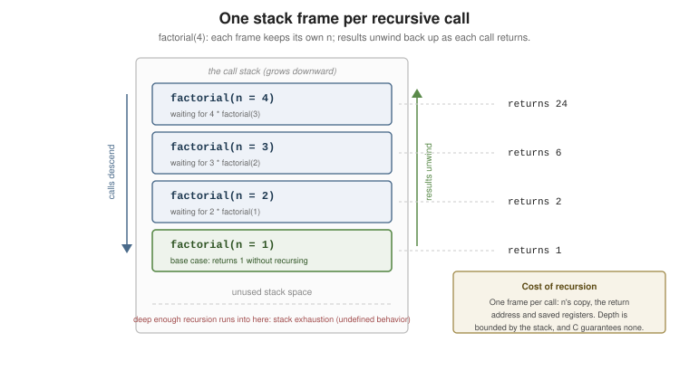

Functions
|
This content was generated with the assistance of AI and should be verified against the official documentation before being relied on in production. |
A C function has a name, a return type, a fixed parameter list and a body. Everything is passed by value — including pointers and structs — and there is no overloading, no default arguments and no closures. That austerity is why C’s calling convention became the interface every other language links against.
Prototypes and Definitions
A prototype declares the name, return type and parameter types; a definition also provides the body:
#include <stdio.h>
double average(const int *values, size_t n); // prototype -- note the parameter types
int main(void)
{
int data[4] = { 1, 2, 3, 4 };
printf("%.2f\n", average(data, 4));
return 0;
}
double average(const int *values, size_t n) // definition
{
if (n == 0) {
return 0.0;
}
long long total = 0;
for (size_t i = 0; i < n; ++i) {
total += values[i];
}
return (double)total / (double)n;
}The prototype is what lets the compiler check the call. Without one, C89 assumed an int return and
unchecked arguments; C23 finally removed that rule — calling an undeclared function is now an error, and
old-style (K&R) parameter lists are gone.
One C23 change worth knowing: void f() and void f(void) now mean the same thing ("no parameters"). Before
C23, () meant "unspecified parameters" and disabled argument checking, which is why every older codebase
writes (void) religiously. Keep writing (void) while you still support C17.
Everything Is Pass-by-Value
The parameter is a copy. To let a function modify a caller’s object, pass its address:
#include <stdio.h>
static void does_nothing(int value)
{
value = 99; // modifies the local copy only
printf("inside does_nothing: %d\n", value); // 99 -- but the caller's x is untouched
}
static void doubles_it(int *value)
{
*value *= 2; // modifies the caller's object
}
static void swap(int *a, int *b)
{
int tmp = *a;
*a = *b;
*b = tmp;
}
int main(void)
{
int x = 5, y = 7;
does_nothing(x);
doubles_it(&x);
swap(&x, &y);
printf("%d %d\n", x, y); // 7 10
return 0;
}The same is true of structs — they are copied wholesale, which for a large struct is real work. Pass
const struct Big * instead of struct Big when the struct is more than a couple of words, and note that
passing a small struct by value is perfectly idiomatic and often faster.
Array Parameters
An array parameter is silently rewritten as a pointer — there is no way to pass an array by value:
#include <stddef.h>
#include <stdio.h>
// These three declare exactly the same function:
static int sum_a(int values[10], size_t n);
static int sum_b(int values[], size_t n);
static int sum_c(int *values, size_t n);
static int sum_c(int *values, size_t n)
{
int total = 0;
for (size_t i = 0; i < n; ++i) {
total += values[i];
}
return total;
}
// C99: [static n] documents (and lets the compiler assume) at least n elements,
// and turns a null argument into a diagnosable error.
static int sum_checked(size_t n, int values[static 1])
{
int total = 0;
for (size_t i = 0; i < n; ++i) {
total += values[i];
}
return total;
}
// A variably-modified parameter: the length is a real parameter, so 2-D indexing works.
static int sum_matrix(size_t rows, size_t cols, int matrix[rows][cols])
{
int total = 0;
for (size_t r = 0; r < rows; ++r) {
for (size_t c = 0; c < cols; ++c) {
total += matrix[r][c];
}
}
return total;
}
int main(void)
{
int values[4] = { 1, 2, 3, 4 };
int grid[2][3] = { { 1, 2, 3 }, { 4, 5, 6 } };
printf("%d %d %d\n", sum_c(values, 4), sum_checked(4, values), sum_matrix(2, 3, grid));
return 0;
}The consequence: sizeof values inside the function is the size of a pointer, not of the array. Always pass
the length alongside the pointer — that convention is the whole reason C’s string and memory functions take
an n.
Why main Is Special
main is the only function with a fixed set of allowed signatures, the only one called by the runtime rather
than by your code, and the only one where falling off the end means return 0. It also may not be called
recursively in a strictly conforming program. See
Program Structure.
Recursion
Every function may call itself; each call gets its own frame of automatic objects.

#include <stdio.h>
static unsigned long long factorial(unsigned n)
{
if (n <= 1) {
return 1; // base case first -- always
}
return n * factorial(n - 1); // one recursive call: naturally a loop
}
// Tail-recursive form: nothing to do after the call, so the compiler can turn
// it into a jump at -O2. C does not guarantee this -- it is an optimization.
static unsigned long long factorial_tail(unsigned n, unsigned long long acc)
{
if (n <= 1) {
return acc;
}
return factorial_tail(n - 1, acc * n);
}
// Recursion earns its keep on recursive data, not on arithmetic:
struct Node { int value; struct Node *left, *right; };
static int tree_sum(const struct Node *node)
{
if (node == nullptr) {
return 0;
}
return node->value + tree_sum(node->left) + tree_sum(node->right);
}
int main(void)
{
struct Node leaf_l = { .value = 1 };
struct Node leaf_r = { .value = 3 };
struct Node root = { .value = 2, .left = &leaf_l, .right = &leaf_r };
printf("%llu %llu %d\n", factorial(20), factorial_tail(20, 1), tree_sum(&root));
return 0;
}C gives you no stack-depth guarantee: deep or unbounded recursion is stack exhaustion, which is undefined behavior and usually a crash. Bound the depth, or rewrite as a loop with an explicit stack, when the input is attacker-controlled.
static Functions — Internal Linkage
static on a function means this translation unit only. It is the closest thing C has to a private method:
#include <stdio.h>
static int helper(int x) // not visible to the linker: no name clashes, freely inlinable
{
return x * 2;
}
int public_api(int x); // external linkage: declared in this project's header
int public_api(int x)
{
return helper(x) + 1;
}
int main(void)
{
printf("%d\n", public_api(20));
return 0;
}Make every function static unless a header declares it. It shrinks the symbol table, lets the optimizer
inline and specialize freely, and turns "who calls this?" into a question one file can answer.
inline Functions
inline is a hint about linkage, not a command to inline. The rules trip up almost everyone, so here is the
whole story in two idioms:
#ifndef SMALL_H
#define SMALL_H
// 1. static inline in a header: every TU gets its own private copy.
// This is the one to use by default -- no separate definition needed.
static inline int min_int(int a, int b)
{
return a < b ? a : b;
}
// 2. plain inline in a header requires exactly ONE external definition
// in some .c file (see small.c below), or the link fails.
inline int max_int(int a, int b)
{
return a > b ? a : b;
}
#endif /* SMALL_H */#include "small.h"
extern int max_int(int a, int b); // the one external definition of the inline function#include "small.h"
#include <stdio.h>
int main(void)
{
printf("%d %d\n", min_int(3, 4), max_int(3, 4));
return 0;
}In practice: use static inline in headers, let the compiler decide (it ignores your hint at -O0 and inlines
plenty of non-inline functions at -O2), and reach for __attribute__((always_inline)) only with a
measurement in hand. See Performance.
[[noreturn]]
A function that never returns to its caller should say so — it lets the compiler drop the return path and stops "control reaches end of non-void function" warnings at the call site:
#include <stdio.h>
#include <stdlib.h>
[[noreturn]] static void fatal(const char *msg)
{
fprintf(stderr, "fatal: %s\n", msg);
exit(EXIT_FAILURE); // must not return -- UB if it ever does
}
static int must_be_positive(int n)
{
if (n <= 0) {
fatal("expected a positive value");
}
return n; // the compiler knows fatal() never comes back
}
int main(void)
{
printf("%d\n", must_be_positive(5));
return 0;
}[[noreturn]] is the C23 spelling; C11 had _Noreturn and the <stdnoreturn.h> macro noreturn, both now
deprecated. exit, abort, _Exit, quick_exit and thrd_exit are all declared this way in the standard
library.
Variadic Functions — <stdarg.h>
A function can take a variable number of arguments after at least one named parameter. C gives you no way to know how many — you must pass a count or a sentinel:
#include <stdarg.h>
#include <stdio.h>
// Count-terminated: the caller says how many follow.
static int sum_of(int count, ...)
{
va_list args;
va_start(args, count); // C23: va_start(args) also works
int total = 0;
for (int i = 0; i < count; ++i) {
total += va_arg(args, int); // the type must match what was passed
}
va_end(args); // mandatory
return total;
}
// Sentinel-terminated: a null pointer marks the end.
static void print_all(const char *first, ...)
{
va_list args;
va_start(args, first);
for (const char *s = first; s != nullptr; s = va_arg(args, const char *)) {
printf("%s ", s);
}
va_end(args);
putchar('\n');
}
// Forwarding to a v-prefixed library function -- the only way to wrap printf.
static void log_message(const char *format, ...)
{
va_list args;
va_start(args, format);
vfprintf(stderr, format, args); // vprintf/vsnprintf/vfprintf take a va_list
va_end(args);
}
int main(void)
{
printf("%d\n", sum_of(4, 1, 2, 3, 4));
print_all("a", "b", "c", nullptr);
log_message("%s=%d\n", "answer", 42);
return 0;
}The pitfalls are all about types, because default argument promotions apply to the variadic arguments:
-
char,shortandboolarrive asint;floatarrives asdouble. Sova_arg(args, float)is always wrong — ask fordouble. -
A mismatch between
va_arg's type and what was actually passed is undefined behavior, and nothing checks it. This is exactly whyprintfformat bugs are dangerous; add__attribute__((format(printf, 1, 2)))to your own wrappers so GCC/Clang check them. -
va_listmay be consumed only once;va_copygives you a second pass, and needs its ownva_end. -
Use a
_Genericdispatch or a tagged-union parameter instead when the argument types are known — see Type-Generic Programming.
See Also
-
Storage Duration, Scope and Linkage — what
staticandexternmean, and the lifetime of a function’s locals. -
Pointers — function pointers and callbacks.
-
Performance —
inline,restrictand the C23 function attributes. -
Input, Output and Files — the
printffamily that variadic functions wrap. -
C++: Functions and Lambdas — C++ adds overloading, default arguments, lambdas and
constexprevaluation.
References
-
WG14 N3220 — the C23 working draft (§6.7.7.4 "Function declarators", §6.9.2 "Function definitions", §6.7.5 "Function specifiers", §7.16 "Variable arguments").
-
GCC manual — Common Function Attributes (
format,always_inline,noreturn).